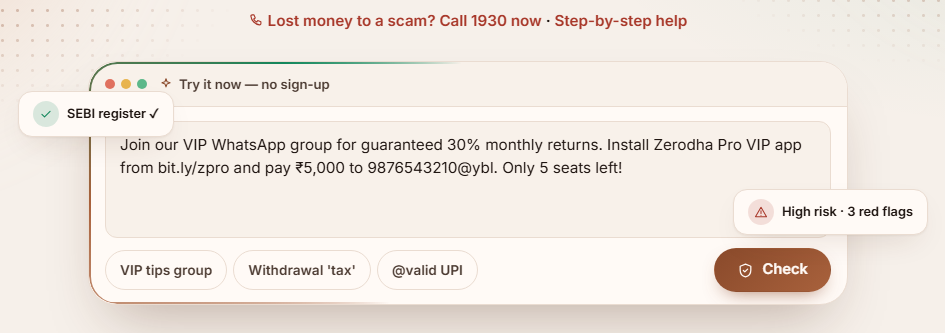
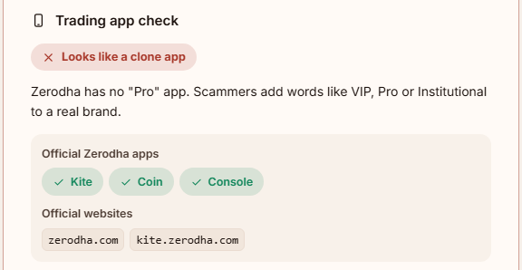
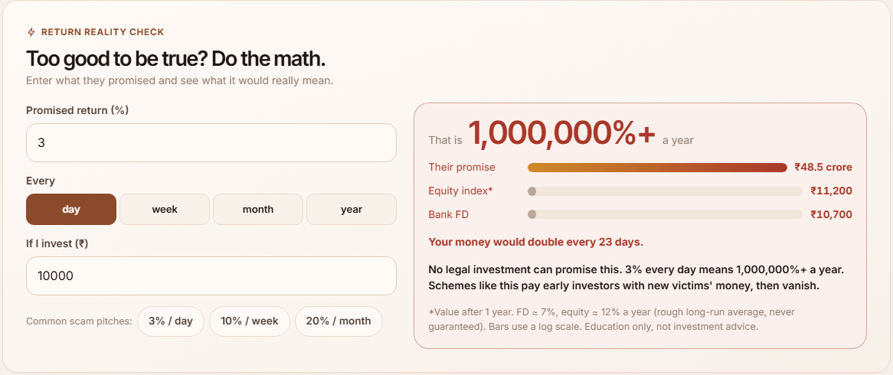

An explain-first scam checker plus a community takedown portal for first-time investors, students and seniors.
CDSL "Reimagine" Ideathon · Team (NSUT): Ashpreet Singh Saini, Karthikya Goswami, Ashutosh Sharma · Mentor: Mohit Sajwan · github.com/ash41106/finsuraksha · working prototype, runs with npm start, no API keys
Bottom line up front. Clone trading apps accounted for 20,043 cases and ₹1,420 crore of losses (as cited by CDSL IPF[1]). Each official safeguard covers one channel and still expects the investor to check. FinSuraksha does the check and explains why: paste a tip, link, UPI (Unified Payments Interface) ID, SEBI number, screenshot or QR code, or speak, and get a risk score and each red flag in plain words. English and Hindi built in; 10 Indian languages in AI mode.Unlike existing tools, it verifies SEBI registration and @valid UPI for you, tells you what to do at your current scam stage, in your language, and feeds verified community reports back into the next check.It is built and working; the ask is a pilot through CDSL/SEBI investor-awareness programmes.
1. Chat verdict: score 100/100, plain-language reasons, and the stage meter at "Pay".

2. Home page: try it now with no sign-up; one-tap sample scams.

3. Clone-app detector: "Zerodha Pro" flagged; the official apps and websites shown instead.

4. Return Reality Calculator: "3% a day" is 1,000,000%+ a year, compared with a bank fixed deposit (FD) and an equity index.
How does your idea empower investors, promote inclusion, and build trust in the securities market?
Empower: replaces "go verify on SEBI's site" with an answer, e.g. "✓ Verified by FinSuraksha: abc.brk@validhdfc is a SEBI @valid UPI ID (Stock broker, HDFC Bank)". Knowing why carries over to the next scam.
Include: voice in and out; English and Hindi built in, 10 Indian languages in AI mode; no install, any phone browser; lightweight: ~300 KB of app code (~80 KB compressed), works on slow mobile connections. Built accessibility: ARIA labels, keyboard focus styles, reduced-motion support, text size, high contrast, dark mode.
Trust: routes people to registered entities and @valid handles; turns return promises into arithmetic: ~9 in 10 (91%) individual equity-derivatives (futures and options, F&O) traders made a net loss in FY25[4], so "guaranteed 3% a day" is false.
Has this been done before? If yes, which geography, industry, and how?
Existing (geography, sector)
What it does
What FinSuraksha adds
Bitdefender Scamio[6] (global, cybersecurity)
AI verdict on texts, links, screenshots
Indian languages + SEBI / @valid UPI / clone-broker checks; every flag explained
FCA Warning List[7] (UK, regulator)
Unauthorised-firm list; self-checks
Same self-test, plus chat checker and community-verified alerts
SEBI Check on Saarthi[3] (India, regulator)
Verifies intermediaries' UPI IDs, QR codes
Same check inside chat, plus message, link and app analysis
Sanchar Saathi Chakshu[8] (India, telecom)
Report fraud calls, SMS, WhatsApp
Pre-filled complaint text; reports flow back into future checks
RBI Sachet[9] (India, banking)
Report illegal deposit schemes
Securities focus; RBI Alert List names flagged in messages
Gap: no tool combines detection, explanation, stage-specific action and a crowd feedback loop in securities.
Are there any unique aspects of your idea. If yes, what?
Explain-first, not verdict-only, with audio; the system verifies SEBI numbers and @valid UPI IDs so the user doesn't have to.
Stage-aware advice: different action if you are being lured, asked to install an app, or asked to pay.
Covers the Play-label gap: the "Verified" label applies, to start with, on Google Play[2], not to APKs (Android app files sent as links), websites or iOS; the clone-app detector and APK-link flag cover those.
Bounded AI and student volunteers: AI only explains masked text and cannot lower a critical rule-based score; students earn verifiable certificates for reporting.
How do you envisage the implementation of your idea?
Architecture (built): one Node.js server, plain-JavaScript front end; OCR/QR on the device → rule engine (35+ patterns) + SEBI register + @valid UPI + community reports → PII masking → optional AI → verdict. Hashed passwords, request-forgery protection, rate limits; 30 automated tests.
SEBI register (honest status): the current snapshot holds 884 Investment Adviser / Research Analyst (IA/RA) entries. Full IA/RA lists and stock brokers load in Phase 1 with the importer already built. Unmatched numbers show "could not verify", never "safe".
Phase
Scope
Partners (proposed)
0. Done
Working prototype, all modules; demo data marked "Sample"
—
1. Pilot, 0–3 mo
Load full register; hosted deployment; grievance officer; WCAG 2.1 AA audit (NVDA/TalkBack); usability tests; built-in quiz as pre/post measure (all planned)
CDSL Investor Protection Fund (IPF) / SEBI awareness programmes; 3–5 colleges
2. Scale, 3–12 mo (roadmap)
Move JSON store to Postgres; the analysis engine is stateless, so it can be replicated behind a load balancer; more UI languages; moderator network
Who pays: free for investors, always. Pilot budget (estimate): 3 months, 3–5 colleges, ≈ ₹1.5–2 lakh: hosting ≈ ₹3,000/month (2-vCPU VM), part-time moderation, outreach materials. Proposed grant partners: depository and exchange investor-protection funds (IPFs), which fund investor-awareness programmes. Grant funding is primary; a broker/DP white-label widget is a revenue hypothesis tested in Phase 3.
Privacy by design (Digital Personal Data Protection Act, DPDP 2023[10]):
Minimisation: FinSuraksha stores no chat, only anonymous counters; screenshots and QR codes are read on the device; image location data stripped.
AI mode is off by default (built): the user switches it on per chat with a toggle labelled "sends masked text to AI"; only then does PII-masked text (phone, email, Aadhaar, PAN, OTP, account numbers) go to the provider (Groq, US-based). Screenshots go to AI only with a separate per-image consent tick. No chat is stored.
Consent and rights: explicit 18+ consent (no child data); data export and account deletion are built; accounts kept until the user deletes them; reports moderated with a right of reply. Retention (built): a daily job anonymises reports after 12 months, removing the reporter link, supporters, OCR text and screenshot; only entity, category, status and votes stay on the Alert Wall.
2. Challenges, Risks, & Assumptions
Potential roadblocks and hurdles
Roadblock
Mitigation
No live SEBI lookup (firewall and captcha on SEBI's tools)
Load the full public register with the built importer; plug in an official feed when offered (one function). We never bypass SEBI's protections.
False positives / negatives
Reasons shown, not a bare verdict; "could not verify" means "check further"; minimum scores for critical signs; analyzer accuracy tests.
Abuse of community reports
3 independent matching votes, moderator review, right of reply, rate limits.
Scammers change scripts
Patterns and the genuine-app list are data files; community reports surface new tactics quickly.
AI errors / prompt injection
AI optional, rule-grounded; cannot lower critical scores; rules-only fallback.
Low digital literacy
Voice, Hindi, large text; assisted use in awareness camps and colleges.
Why will this idea work?
Prebunking (inoculation): practising against weakened scam tactics builds resistance; the "Bad News" game cut perceived reliability of fake headlines in a 15,000-player pre/post study[5]. Spot the Scam applies this to investment fraud.
Action over warnings: a design principle. A UK online payment-fraud experiment found that redesigned calls-to-action reduced fraudulent payments more than standard warnings, though the effect faded with repetition[11]. FinSuraksha's next step changes with the scam stage, and the pilot will test this.
It already runs, complements regulators (routes to SEBI, @valid, 1930, Chakshu) and self-reinforces. The pilot's pre/post quiz will produce the first FinSuraksha-specific evidence.
3. Impact
Who will benefit the most from this
First-time investors lured by tip groups, clone apps and "guaranteed" returns, including dabba trading (illegal off-exchange betting on share prices).
Senior citizens: one-tap share of the verdict with a family member (WhatsApp etc.), audio summaries, large text, voice input. Students: learners via the game, volunteers via FinScam Hunter.
Regulators and depositories: a crowd-sourced early-warning feed of new scam tactics.
What are the expected outcomes and benefits of your idea
SEBI PR 20/2026, Verified app label on Google Play: https://www.sebi.gov.in/sebi_data/attachdocs/mar-2026/1774448914437.pdf
SEBI PR 64/2025, Validated UPI handles and SEBI Check: https://www.sebi.gov.in/media-and-notifications/press-releases/oct-2025/sebi-rolls-out-validated-upi-handles-and-sebi-check-for-secure-investor-payments_97020.html
SEBI PR 39/2025, F&O study FY25: https://www.sebi.gov.in/sebi_data/attachdocs/jul-2025/1751900802566.pdf
Roozenbeek & van der Linden (2019), Palgrave Communications 5:65: https://doi.org/10.1057/s41599-019-0279-9
Akesson, Gathergood & Quispe-Torreblanca (2023), Preventing Payments Fraud in the FinTech Era: New Evidence from a Behavioural Experiment, CeDEx DP 2023-08: https://www.nottingham.ac.uk/cedex/documents/papers/cedex-discussion-paper-2023-08.pdf